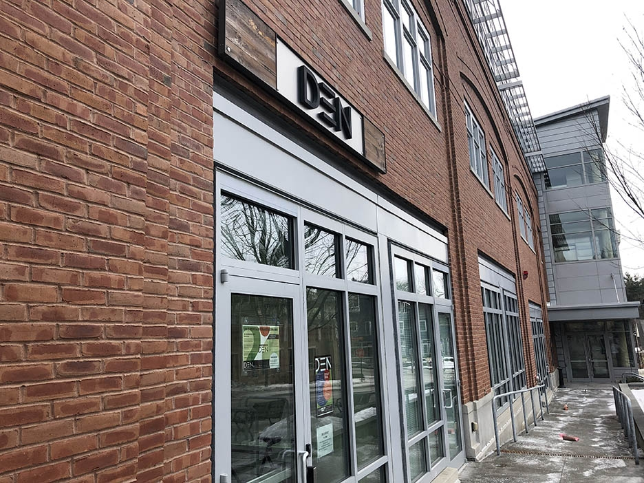
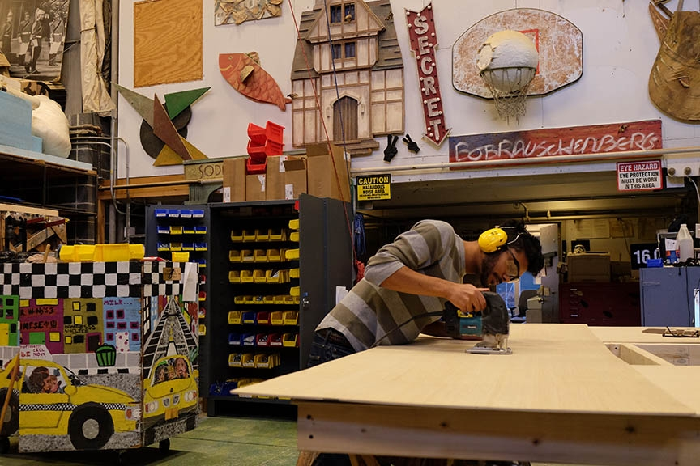
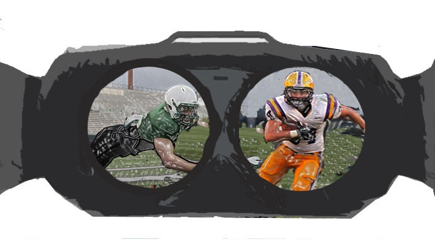

Winter Carnival 2018

Student entrepreneurs create their own businesses

College offers classes with nontraditional course designs

Football team uses state-of-the-art virtual reality tool
About Us
The Dartmouth, founded in 1799, is the student newspaper of Dartmouth College and the campus’s only daily. The Dartmouth is published by The Dartmouth, Inc., an independent, nonprofit corporation chartered in the state of New Hampshire.